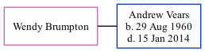

Wendy Brumpton, the wife of Andrew Philip Vears (the second cousin on the mother's side of Nigel Horne), and married Andrew in Colchester, Essex, England around Nov 19881.
Citations
England & Wales Marriages 1837-2005 - Findmypast
Family Tree

Generated by ged2site. Last updated on Nov 13, 2024